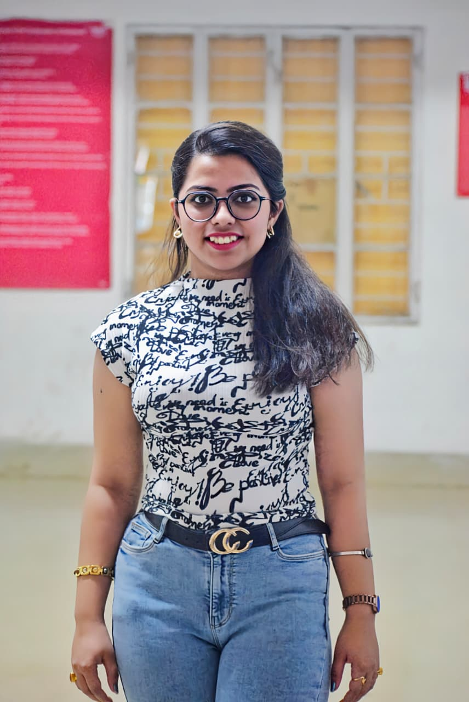

Computer Science undergraduate exploring algorithms, AI, and software development through academics and hands-on learning. Continuously working on improving problem-solving skills and building practical experience.

I am a Computer Science student with an interest in problem solving, artificial intelligence, and software development. I enjoy understanding how systems work and gradually strengthening my foundations through coursework, practice, and projects.
May 20 – July 21, 2025 | Team Leader
Contributed to an industrial Factory Acceptance Test (FAT) project for a bottle defect detection system developed for JUNG KWAN JANG (100g, 240g, and 250g variants).
This experience strengthened my technical understanding of computer vision systems and helped me develop leadership, coordination, and problem-solving skills in a real-world environment.
Selected for a structured industry exposure program focused on professional development, business understanding, and technology applications.
Currently open to internship opportunities to gain real-world experience and continue learning.
As a Computer Science student passionate about AI and software engineering, I'm always excited to connect with fellow students, mentors, or explore new opportunities. Whether it's collaborating on projects, discussing tech trends, or just chatting about code—feel free to reach out!